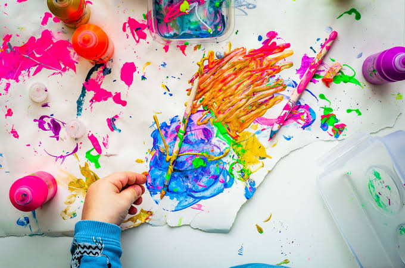

ศิลปะไม่ได้มีเพียงการวาดภาพหรือการระบายสีเท่านั้น แต่ยังรวมถึง จิตรกรรม ประติมากรรม สถาปัตยกรรม ดนตรี นาฏศิลป์ วรรณกรรม การถ่ายภาพ ภาพยนตร์ และศิลปะรูปแบบอื่น ๆ โดยแต่ละแขนงมีวิธีการและเทคนิคในการถ่ายทอดที่แตกต่างกัน
ศิลปะมีความสำคัญต่อมนุษย์ เพราะช่วยให้มนุษย์สามารถ แสดงออกทางความคิดและอารมณ์ สร้างความเพลิดเพลิน สร้างความงาม และสะท้อนเรื่องราวของสังคมและวัฒนธรรม นอกจากนี้ ศิลปะยังช่วยพัฒนาความคิดสร้างสรรค์ จินตนาการ และการมองเห็นคุณค่าของสิ่งต่าง ๆ รอบตัว
